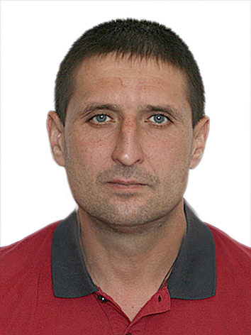

CV

Dmitriy Cherednychenko
Frontend Developer
Junior
Languages
English - A2 speaking, A2 writing
Ukraine - Native
Personal Qualities
-
Communicable
-
Easily trained
-
Single-minded
-
Responsible
Goal
Looking for a job as a Front-end Web Developer in an outsource or product company.
Summary
Experienced with has less than a year in Frontend Web Development. I am a specialist with a great desire to develop in this area. Successfully completed the A-level Front-end Development course where got the knowledge and experience in HTML, CSS, JavaScript, React\Redux.
Professional skills
-
Programming languages: HTML, CSS, JavaScript, React.
-
Software: Microsoft Office
-
OS: Windows, Linux
-
Bootstrap
-
Responsive UI (making layouts pixel perfect) + mobile optimization
-
React/Redux
-
Git
Educational details
- 1996-2001 - Kharkov State Technical University of Radio Electronics, faculty of computer engineering and control, specialty: computer and intelligent systems and networks, qualification: specialist - computer systems analyst>
-
2001-2002 - Kharkov National University of Radio Electronics, faculty of postgraduate education, specialty: information systems in management, qualification: engineer – economist